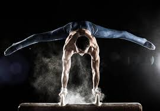

History of Gymnastics
Gymnastics has its origins in ancient Greece, where physical fitness was an essential part of education. Modern competitive gymnastics began in the 19th century in Germany and spread across Europe.
The sport was introduced to the Olympics in 1896 for men and in 1928 for women. Since then, it has evolved into a globally celebrated and artistic sport.
Gymnastics Disciplines & Rules
- Artistic Gymnastics (Men’s and Women’s events)
- Rhythmic Gymnastics (Women only)
- Trampoline Gymnastics
- Acrobatic and Aerobic Gymnastics
- Judged on difficulty, execution, artistry, and control
Main Gymnastics Events
- Vault
- Floor Exercise
- Pommel Horse (Men)
- Uneven Bars (Women)
- Balance Beam (Women)
- Parallel Bars and Rings (Men)
Major Gymnastics Competitions
- Olympic Games
- FIG World Artistic Gymnastics Championships
- European and Pan American Championships
- World Cup Series
Legendary Gymnasts
- Simone Biles (USA)
- Nadia Comăneci (Romania)
- Kohei Uchimura (Japan)
- Larisa Latynina (Soviet Union)
- Mary Lou Retton (USA)
Health Benefits of Gymnastics
- Develops strength, flexibility, and coordination
- Enhances balance and body awareness
- Improves posture and agility
- Builds confidence and mental discipline
- Great for physical and emotional growth in children
Global Popularity of Gymnastics
Gymnastics is practiced and admired all over the world. With its elegant performances and extreme athleticism, it is one of the most-watched Olympic sports and continues to inspire athletes globally.